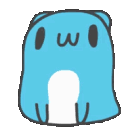
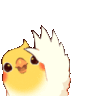

お
知
ら
せ

愛生 | Aoi
あ
あ

2024-12-01
Reflecting on this year is like opening up a memory box. I don’t know about yours, but mine has a miniature cup, brussels sprout, car tyre, and microphone, with each one tied to memories of those around me. So, without further ado…

Harry* is the owner of a nearby café who’s notorious for being so chatty that customers often have difficulty crossing the road to catch their train in time. In his spare time, he browses AliExpress to bookmark miscellaneous things and video calls his wife, two kids and overweight cat who remain in Bangladesh. We like to talk about being cat parents, good brands of puff pastry, and complain about Shitney’s weather.
Sinead* is one of my coworkers. She’s loud, friendly, and has a strong Irish accent. We genuinely get along but mostly communicate through text because I can’t understand her that well even after 13 months. One day I thought she was having a big fight with another coworker in the office when she was actually just raving about scones (which she loves with clotted cream). On Halloween, I tricked her into biting into a brussels sprout that was disguised as a ferrero rocher. She helped me trick five other people in our office after swearing and telling me off.

Keith* started working with us in March. For some very mysterious reason he sometimes changes his car tyre during work hours and takes photos of his car afterwards, leading to us calling him our resident ‘spin doctor’. He loves recommending restaurants to people but 8/10 are Thai so we don’t really listen to him anymore. He’s cheerful and animated when sober but unexpectedly melancholic when drunk.
Si On* is one of the first people I befriended after moving to Australia. A few months ago, her daughter was discharged from a public hospital, and she was so impressed with the level of care given that she decided to raise money to donate to them. She asked me to join her in busking around the CBD, so after we got a permit, we did 5 sessions of her singing and me playing the guitar in different tourist hotspots. It was a really fun experience but my fingers were sore for days afterwards and typing was a *itch.
Of course, this wouldn’t be a proper reflection without recalling a few embarrassing moments that happened (because those are always the most memorable…)
I’ve always struggled to quickly parse double and triple negatives in spoken English, so I dread the moments when people say things like “…can’t not…” or “I can’t say he’s never not late”. In fact, my boss said the latter to me 2 months ago and I just stared at him blankly for a good few long seconds.
I’m also terrible at understanding strong Irish or Scottish accents, so I was thrilled when I was served by a supermarket cashier with a thick Glaswegian accent. I could tell that he was being friendly but only because the few words I understood and his smile. It was days later when I realised that he had said something like, “Well thank you, I hope you have a nice day!” to which I replied, “Oh, no thanks, that’s all.” 
My job has led me to present at a couple of conferences and speak as a guest panellist at a few events, so I feel comfortable interacting in-person. But it’s a different story when it comes to teams calls and other voice calls. I get nervous and start to mispronounce words, and sometimes even forget words in English (such as “curtain”…)
If you’re still reading this, thanks. I’m glad you haven’t died of second-hand embarrassment 😇 I’m off to Kyoto soon to see some old faces, and I hope your festive season is off to a great start!
* Names have been changed.
アドベントカレンダー2024年12月1日
12月1日のアドベントカレンダーの投稿を載せていただきます。アドベントカレンダーの投稿はいつも心から書くようにしています。頭に浮かんだ言葉でそのまま書いてみます。
私がスポーツアニメにこだわる理由と、日本語学習の初心者（ビギナー）にスポーツアニメを勧める理由についてお話しします。 タバコを吸いながら空を向いて遠い目をする
タバコを吸いながら空を向いて遠い目をする
スポーツアニメは魂の燃料になる。ペースが速く、登場するキャラクターは魂を込めた動きをする。見ててエンジンがかかった気持ちになる。スポーツをしたことがなくても、挫折を経験した人やなにかしらの工夫をしたことのある人には、共感できる部分が多いはず。スポーツアニメでキャラクターの心の声を聞かさられることが多いが、それはおおかたそのキャラクターが勝利へのヒントを掴みかけているときや、自分が上達するために必要な何かを探しているときだ。
どんなものでも、新しいスキルを習得する過程の中で、なんども壁にぶつかることがあるはずで、スポーツアニメを見て、キャラクターの工夫と壁を乗り越える姿を見て、壁にぶつかったときどういう思考回路をするべきかの参考になったり、カタルシスになったりする。
でもそういうのはいいよ、シニ。心がどうとかに興味がないって思ってる方もいると思うので、心のかけらもない、冷酷な彼らにもメリットのある話をしよう。まず、仲間云々の話は正直私もそこまで興味や関心がない。それに、スポーツアニメの真似してはよくないところといえば、やはり勝ちに拘りすぎるところかな。もちろん、誰でも勝つのが目的であって、勝つための努力は惜しむべきではない。ただ、1つの試合や大会に拘るのではなく、物事をもっと長い目で見る必要があると思う。インターハイで優勝することを目指すより、自分の長所をより強くして試合で生かす努力と、短所を補う努力がなにより大事だと思う。もちろん、努力することと優勝することは繋がってるとは思うし、目標があったほうが努力しやすいこともわかる。ただ、多くのスポーツアニメは、高校が舞台だから、登場する選手はそれぞれ個性が強くて（まあ、キャラクターの個性で物語に独特性を与えたいという気持ちはわかるし、インハイ優勝は誰でも共感できそうなわかりやすい目標になることもわかる）、チーム内での立場や他チームとの相性が優先されてしまうけど、実際はそうはいかないことが多い。現実では、自分の相性や向き不向きと関係なく闘わなければならない場面が出てくる。あと、負けた人はいつも次の戦いに向けて練習するとき、悔しさが努力の糧（モチベ）になることが多いが、時には違うモチベーションを見せてほしい。例えば、負けてもなお、そのスポーツを愛しているから次も戦うとか、負けた時になにかが何か新しい発見をしたとか（自分より強い人がこんなにいるんだとか、そういう抽象的な理由ではなく）、一度も負けたことのない人間はいないから、負けたことを悔しむより、上達する意思が強いから次も戦いたいと思うキャラクターがいてほしい。
私の悪い癖で話がだいぶ脱線してしまったけど、日本語学習の初心者（ビギナー）にスポーツアニメを勧める別の理由は、スポーツアニメで同じ言葉が繰り返し使われたり、同じ文系に当てはまるセリフが多かったりする。だから同じパターンのセリフを、同じ言葉をなんども聞いたりすることで自然な日本語が身に付く。長いアニメほど慣れやすいので、その点も含めてスポーツアニメは初心者に向いている。
来年こそ、みんなでスポーツアニメをたくさん見ましょう！ 🎾 🏐 ⚾ ⚽ 🚴 🥊

This is the AdCalendar for the year 2024.
The program is made in Python, and I created readme.py. (For more information about the site, you can check out the “Whimsical Monotsukuru Blog”.)
The readme text file describes how to use it and so on.
I don't want you to get a virus or anything, I just want you to install and use the 3.12.4 version of Python.
You can use it by doing “Python readme.py” and the prompt system (PowerShell) with Python installed, so please use it.
There is also one made in C#, but that one is for Windows.
If you have Windows, please use it.
The function of readme is to generate a text file, readme.txt.
It is a poor one, but we hope you can use it.

こんにちはみんな、クリスマスおめでとうございます。
今回ちょっと私情の話をします。日本語は1年以上私が程度理解出来るのがどんな気持ちあるの話をしよう。あの…実は、足りないです。いつも「上手くなりたい」と考えるけれど最近本当によく集中できなかったばかりに上達できないと思う。  小説を読んだり、アニメを見たりしたいけれどつい怠け続けちゃう。私がやってみたらできるけれど。
小説を読んだり、アニメを見たりしたいけれどつい怠け続けちゃう。私がやってみたらできるけれど。
Ankiでも終わるにはかなりの時間がかかる。  つまり、最近ヤル気がないと思う。英語では Burnoutっていう。迷子みたい私（笑）
つまり、最近ヤル気がないと思う。英語では Burnoutっていう。迷子みたい私（笑）
でも、それはきっとわけじゃないです。Burntoutなら毎日Ankiを学習してないでしょ？ 日本語を勉強しはじめる頃から今まで、日本語勉強するのを始める理由が失っちゃった。その理由見つけたら私のヤル気が戻てくる。。。。祈ります
最近そんな感じある。私の話よりこのサーバーからの他人の話の方が朗らかでもそんな話をしながら振り返りましょう。今、私の状況もうちょっと分かる。偶に、困ってることの話をするのは大切だ。
読んでくれてありがとうございます
よろしくお願いします 
待降節おめでとうございます！今年は、我ら人類が長らく頭上に重く圧し掛かっていたパンデミックの靄を抜け、多くの恵みを受けることができた一年でしたね！
私自身も予想外の展開を迎え、教師の道を離れ、再び医療の世界に戻る決意を固めました。
来年も、今年に負けず劣らず充実した興味深い年になるようにしたいですね！
さて、今日ってなんと@Perry【訂正お願い😭😭】の12歳の誕生日でもあるそうですね！
ん？
21歳？
ごめん、先生、物覚えが悪くて……。 (〃⌒∇⌒)ゞえへへっ♪
遂に大人の仲間入りを果たし、アメリカでも合法的にお酒を楽しめる年齢になりましたよね。
（大人にはなったものの、オトナと呼べるかどうかはまだ未知数ですが。）
多分このままだと負け犬に成り果ててしまいかねまい……なんて思ったりもしますが、それでもずっとペリーらしく楽しんで生きてほしいですね。おたおめ。
今回は、私が今年３月に書いた、「ファビング」という現象と現世代の恋愛観に与える影響についての散文をご紹介したいと思います♡！
ふぁびんぐって何、って？
まあ、ペリーならきっとこの言葉に詳しいでしょうので、直接本人に聞いてみるのがいいかもしれませんね☆
この話は完全にフィクションですが、主人公を形作る際に携帯を常に肌身離さぬペリーからインスピレーションを得たことは、否定できないですぅ……。
これ以上兎や角言うのはやめておきます。ぜひ楽しんで読んでください～♬
━━━━━━━━━━━━━━━━━━━━━━━━━━━━━━━━━

こんにちは、皆さん。この日はいいです。それで、今日は私の日。この年はいいね。君たちが大好きだよ。ありがとうございます、皆さん。

EJLXの皆さん、こんにちは！今年もいよいよ最後を迎えようとしていますね。早かったような、遅かったような…
このサーバーに参加してもう半年ぐらい経ちますが、いろんな人たちと出会えて、とても楽しく暖かい場所だなと、
あとめっちゃ勉強になる〜って助かる場面も豊富で、参加して本当に良かったと実感しています。
みんなありがとう
初のアドベントカレンダーに参加しようと思ったのは実はつい昨夜だったのですが、
（最初は上手く書けるかどうか不安で諦めていたんですが、年に一度しかできないとのことで頑張ろうと思いました  ）
）
偶然今日スポットが開いたみたいなので、即席ですがみなさんに楽しんで読んでいただけるものを書くことができれば嬉しいです。
何を書けばいいのか、迷った果てにたどり着いたのがなぞなぞ川柳です
ペケxポン影響でなぞなぞ川柳が好きなのですが、二句考えたものを記載させていただきます
ただ好きと言っても、ただの趣味でアマチュアとか初心者とかのレベルでもなく、
右も左も分からない自分なのですが、ここらでいっちょ挑戦したいと変な勇気が舞い上がってしまいました（？）笑
未熟なため唐突で微妙ななぞなぞ川柳まとめになってしまいますが、毎日忙しく頑張っている皆さんのために少しでも楽しい暇になればと、
そして願わくば脳の刺激になればと思います。笑（出来が悪いなぞなぞになっていた場合本当にすみません 
すっきりしない後味の浄化にペケxポンやナゾトレ川柳を拝見してもらえると幸いです笑）
では早速ですが、該当するシナリオを読んで、二つの意味を持つ下の句を当てるなぞなぞ川柳となっております。（ペケxポン由来）
どうぞ、お楽しみくださいませませ〜 
（※強引にでもなぞなぞが成り立つため、シナリオで起きる出来事が不自然な部分があったりするのですがどうかお許しを笑）
①…お正月川柳🎍
★⭐︎★⭐︎
お正月の昼下がり、叔父のレイさんはおばあちゃん家で甥っ子のヒロくんを待っていました。
甥っ子が初めて1人で電車に乗って来ることになり、レイさんは少し心配しつつも、可愛い甥の成長を感じていました。
「ヒロくん、ちゃんと来れるかな…。まぁ、スマホも持ってるし大丈夫やんな。」
そんなとき、突如レイさんのスマホが震え出し、メールの通知音が連続で鳴り始めました。
「ヒロ、まだそっちに着いてへんって？」
「電車に乗ったって連絡きた？」
「今どこか知ってる？まだ着かへんの？」
「駅まで迎えに行ったほうがいいんちゃう？」
「道迷ってたりしてへんかな？なんか連絡きた？」
「ちょ、待て待て！メッセージ多すぎやろ、兄貴！」
「どれに答えればいいんや…ってかどれが一番新しいんか分からん…。うわ、追いつけへんてっ！」
レイさんは必死でメッセージを整理しながら、兄に「ヒロくんを信じよう」と返信しようとしますが、
その間にもまた新しいメッセージが次々と…。
「こっちまでめっちゃ心配になってくるやん…いや、元々やけどさ…」
そのとき、玄関のチャイムが鳴りました。
「おっ、ヒロくん来たんかな！無事着けて良かった…！」
だがドアを開けると、そこに立っていたのは先ほど注文していたピザの配達員さんだった。
どないしよう…やっぱり迎えに行った方がいいんかな…
★⭐︎★⭐︎
ここで一句
（下の句は六文字となります）：
正月に
慌てる親
◯◯◯◯◯◯
答えは下記スポイラータグで伏せているので、ぜひ宜しければ答え合わせ等にご覧になってください！
おいつかない（メールに追いつかない・甥がまだ家に着かない）
②…勉強川柳 
★⭐︎★⭐︎
ある日の夜、ヒロくんはデスクに向かい、試験勉強をしていた。
手元には厚い漢字辞典と練習帳。次の問題を解こうとしたとき、目の前の漢字に目が止まった。
「えっと、この『生』って字…読み方がいっぱいあるんやっけ。」
ヒロくんは練習帳を見つめながら、他の意味もしっかり把握しようと励む。
「『せい』？それとも『なま』…いや、『うむ』とかもあるんやな…」
練習帳を開いたまま、辞典をめくる。
「うわ、なんでこんなに意味があるんや…なんか全然ピンときーひんっていうか…いまいち感じ取れへんなー…。」
ヒロくんはふと手を止め、漢字の勉強はやっぱり難しくて嫌だな、と思ってしまうのでした。
★⭐︎★⭐︎
ここで一句
（こちらも下の句は六文字となります）：
難しい
意味が多すぎ
◯◯◯◯◯◯
こちらも答えは下記スポイラータグをかけて伏せておりますが、宜しければチェケラ！ 
かんじにくい（感じにくい・漢字がにくい）
いやー猛烈にお恥ずかしいですが 最後まで読んでいただき、誠にありがとうございます！
それでは皆さん、良いクリスマス＆新年をお迎えください〜 🎇
あと最近寒くなってきましたので、お体にもお気を付けてください
ハッピーホリデーズ！！ 🎄 